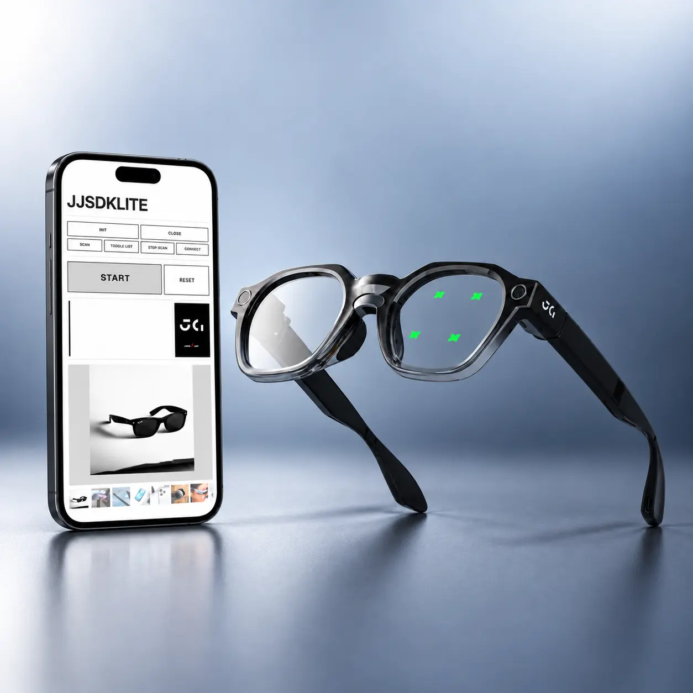

J9 智慧眼鏡 App & UI J9 Smart Glasses App & UI
從 to B 展示機到真正的商品——設計跨裝置體驗，整合眼動互動、配套 App 與眼鏡端 UI，讓廠商清楚理解這隻眼鏡的能力與可延伸的應用方向。 From B2B demo prototype to real product — designing a cross-device experience integrating eye-tracking interaction, companion App, and on-glasses UI, helping partners clearly understand the glasses' capabilities and customizable directions.
App · Glasses UI · Design System

Design Context
HJ1 是 to B 的眼動功能展示機，定位為技術展示樣機。J9 是下一代產品——處理晶片升級，部分硬體配件相同（前框鏡頭、眼動模組、可串連 AI 的晶片、喇叭與麥克風等），最大的差異在於 J9 搭配完善的安卓手機系統，可以配合手機硬體進行彈性更大的功能規劃與互動設計。
HJ1 was a B2B eye-tracking demo prototype. J9 is the next-generation product — with an upgraded processing chip and shared hardware components (front-frame camera, eye-tracking module, AI-capable chip, speaker, microphone). The key difference: J9 pairs with a full Android phone system, enabling far more flexible feature planning and interaction design leveraging phone hardware.
J9 的商業目標更明確：定位為 to B 產品，面向 to C 廠商提供可客製化的解決方案——讓廠商自由組合功能、依情境調整互動模式，打造自有品牌的智慧眼鏡應用。
J9 has a clearer commercial goal: a B2B product offering customizable solutions to consumer-facing brands — letting partners freely combine features, adapt interaction modes per scenario, and build their own branded smart glasses applications.
Challenges
- 整合多種輸入方式：眼動選擇、眼動拍照等操作有別於 touchpad 或手機控制，需兼顧「好學習」與「能清楚展示功能」，同時讓操作邏輯貼近使用者熟悉的行為模式。
- 跨裝置視覺一致性：手機與眼鏡螢幕尺寸、輸入方式差異極大，如何讓兩端 UI 保持相同設計風格與系統規範，是視覺層面的核心挑戰。
- 互動架構分工：手機主控功能選擇，眼鏡主控細部互動——讓兩端彼此配合、互補，並盡量簡化整體互動難度。
- 新興產品的認知建立：多數廠商對智慧眼鏡認知有限，展示場景需設計得夠直觀，讓功能特色具體可感。
- Integrating multiple input modalities: Eye-dwell selection and eye-triggered photos differ from touchpad or phone controls — the design needed to be both easy to learn and capable of clearly demonstrating each feature.
- Cross-device visual consistency: Phone and glasses screens differ dramatically in size and input method. Maintaining the same visual language and design system across both was the core visual challenge.
- Interaction architecture division: Phone handles feature selection; glasses handle detailed interaction — the two ends needed to complement each other while minimizing overall complexity.
- Building mental models for a new product category: Most partners have limited exposure to smart glasses — demo scenarios had to be concrete enough to make the features tangible.
What I Did
- 設計 App 配對頁面與功能選單，讓廠商清楚掌握眼鏡端的完整功能
- 規劃眼鏡端四大功能的 UI 畫面：照片閱覽、拍照、AI 翻譯、ECD（電致變色鏡片控制）
- 定義互動規格，作為與韌體／工程師溝通的設計依據
- 建立 Design System，確保 App 與眼鏡端 UI 視覺風格一致
- 規劃 Prototype，透過展覽進行 User Testing，依回饋持續優化
- 與工程師共同撰寫使用者說明文件
- Designed App pairing flow and feature menu, giving partners a clear picture of the glasses' full capabilities
- Planned glasses-side UI for four core functions: photo gallery, camera, AI translation, ECD (electrochromic lens control)
- Defined interaction specs as the design handoff basis for firmware and engineering teams
- Built a Design System to maintain visual consistency between App and glasses UI
- Built prototypes, conducted User Testing at exhibitions, and continuously refined based on feedback
- Co-authored user documentation with engineers
Design Process
互動設計的核心問題：如何讓使用者快速理解眼動操作、並在 App 與眼鏡兩端都能流暢切換？
Core interaction design question: How do we help users quickly grasp eye-tracking operation and switch fluidly between the App and the glasses?
配對流程參照藍牙邏輯，功能選單為眼動而生
Pairing flow modeled on Bluetooth; feature menu designed for eye-dwell selection
配對流程：參考藍牙連線介面的設計邏輯，讓使用者循序漸進、逐步點擊直到配對成功，降低學習門檻。
Pairing flow: Modeled on familiar Bluetooth connection UI — users step through a linear click sequence until pairing is confirmed, minimizing the learning curve.
功能選單——關鍵設計決策：直列 vs. 2×2
Feature menu — key design decision: vertical list vs. 2×2 grid
眼鏡端四大功能選單採用單欄直列排列（4 個 icon 垂直排成一列），而非直覺上的 2×2 方格。
The four glasses-side features are arranged in a single vertical column — not the intuitive 2×2 grid.
這個決策源自 J9 的輸入邏輯：眼動選擇為主、touchpad 點選為輔。直列設計讓眼動選擇的精確度更容易被展示——每個選項佔有足夠的垂直空間，凝視觸發更直覺；若改為 2×2，touchpad 的橫向滑動操作會更複雜，也讓眼動的優勢變得不明顯。
This decision follows J9's input logic: eye-dwell selection is primary, touchpad is secondary. A vertical layout makes eye-dwell precision easier to demonstrate — each option has enough vertical space for comfortable gaze targeting. A 2×2 grid would complicate horizontal touchpad navigation and make eye tracking's advantage less visible.
用熟悉的行為模式降低學習成本，用設計解決硬體限制
Reduce learning cost with familiar patterns; use design to resolve hardware constraints
拍照功能：使用者對手機拍照的互動模式已非常熟悉，因此眼鏡拍照 UI 採用相同邏輯——在畫面下方放置圓形快門按鈕，使用者透過眼動凝視觸發。
Camera function: Users are already deeply familiar with phone camera interaction — so the glasses camera UI follows the same logic: a circular shutter button at the bottom of the display, triggered by eye-dwell.
然而，前框鏡頭的位置與使用者眼睛之間存在視線差（parallax），觸發後畫面中的取景範圍不等於實際拍攝結果。為此設計 3-2-1 倒數機制：觸發後顯示倒數，讓使用者確認要拍攝的畫面後再實際拍照——將硬體限制轉化為一個直覺的確認流程。
However, there is a parallax gap between the front-frame camera and the user's eyes — what the viewfinder shows doesn't match what actually gets captured. To address this, I designed a 3-2-1 countdown mechanism: after triggering, a countdown appears, letting the user confirm the intended frame before the photo is taken — converting a hardware constraint into an intuitive confirmation step.
其他功能：照片閱覽、AI 翻譯、ECD（電致變色鏡片深淺控制）——四大功能透過直列選單切換，眼鏡端負責細部互動，手機端負責功能層級的選擇與管理。
Other functions: Photo gallery, AI translation, ECD (electrochromic lens shade control) — all four functions accessible via the vertical menu. The glasses handle detailed interactions; the phone handles function-level selection and management.
跨裝置共用一套視覺語言，各自因應硬體限制調整
One shared visual language across devices; each adapted to its hardware constraints
建立跨 App 與眼鏡端的統一 Design System，確保兩端在視覺風格、色彩、字體層級上保持一致——而非「做兩套 UI」。各裝置再依螢幕尺寸與輸入方式進行適配調整，讓使用者在切換裝置時不會感到斷裂。
Built a unified Design System spanning both the App and glasses UI — ensuring consistent visual language, color, and typography hierarchy across both ends, rather than designing two separate systems. Each device then adapts for its screen size and input method, so users never feel a disconnect when switching between devices.
Results
公司內部易用性測驗結合展覽 User Testing，歷經 4 版迭代，持續優化互動細節。
Internal usability testing combined with exhibition User Testing, across 4 design iterations, continuously refining interaction details.
針對四大功能進行簡易易用性測驗，作為設計合理性的量化依據。
Conducted lightweight usability testing across the four core functions as a quantitative baseline for design validity.
透過展覽 User Testing 收集真實使用回饋，每輪迭代聚焦在互動精確度與學習曲線的改善。專案目前仍在開發中，設計與工程同步推進。
Real-world usage feedback collected through exhibition User Testing. Each iteration focused on improving interaction precision and flattening the learning curve. The project is still in active development, with design and engineering advancing in parallel.
Reflection
和 HJ1 最大的不同，是從「展示一件事」到「整合多個功能」的思維轉換。
The biggest shift from HJ1: moving from "demonstrate one thing" to "integrate multiple functions."
HJ1 的設計目標很單一：在 1.5 分鐘內讓客戶感受到眼動追蹤的核心價值，成功等於流程不中斷。J9 是真正的產品——使用者要學會用它、記得怎麼用、並在不同情境下靈活操作。這讓設計複雜度完全不同：不只要思考每個功能的互動邏輯，還要思考功能之間的關係、App 與眼鏡之間的分工，以及整套體驗對新使用者的學習曲線。
HJ1 had a single design goal: make a visitor feel eye tracking's core value in 1.5 minutes. Success meant no flow interruptions. J9 is a real product — users need to learn it, remember how to use it, and operate it flexibly across different contexts. That makes the design complexity completely different: not just thinking about each feature's interaction logic, but also the relationships between features, the division of labor between App and glasses, and the overall learning curve for new users.
跨裝置設計系統的挑戰也超出預期。手機與眼鏡的螢幕尺寸、輸入方式、視覺呈現空間差距極大，要在兩端維持一致的視覺語言與操作邏輯，遠比設計單一裝置困難。
The cross-device design system challenge also exceeded expectations. The gap between phone and glasses — screen size, input method, visual rendering space — is enormous. Maintaining consistent visual language and interaction logic across both ends is far harder than designing for a single device.
這個專案讓我體會到，對新興硬體產品而言，持續迭代才是設計的核心工作——不是做出完美的第一版，而是在每一輪展覽與測試中，找到下一個最該改進的環節。
This project taught me that for emerging hardware products, continuous iteration is the core design work — not producing a perfect first version, but finding the next most important thing to improve in every round of exhibitions and testing.
Key Takeaways
- 整合多個功能比展示一個功能難得多——功能之間的關係與分工邏輯，是 UX 架構最核心的挑戰
- 跨裝置設計系統不是「做兩套 UI」，而是找出兩端共同的設計語言，再各自因應硬體限制調整
- 眼動互動的學習曲線設計，關鍵在於讓新行為盡量貼近使用者既有的直覺——圓形快門按鈕就是一例
- 對新興硬體產品，持續迭代比追求完美第一版更重要
- Integrating multiple functions is far harder than showcasing one — the relationships and division of labor between features is the most central UX architecture challenge
- Cross-device design system means finding a shared design language, not building two separate UIs — then adapting each to its own hardware constraints
- For eye-tracking interaction, the key to flattening the learning curve is anchoring new behaviors as close as possible to users' existing instincts — the circular shutter button is a perfect example
- For emerging hardware products, continuous iteration matters more than chasing a perfect first version